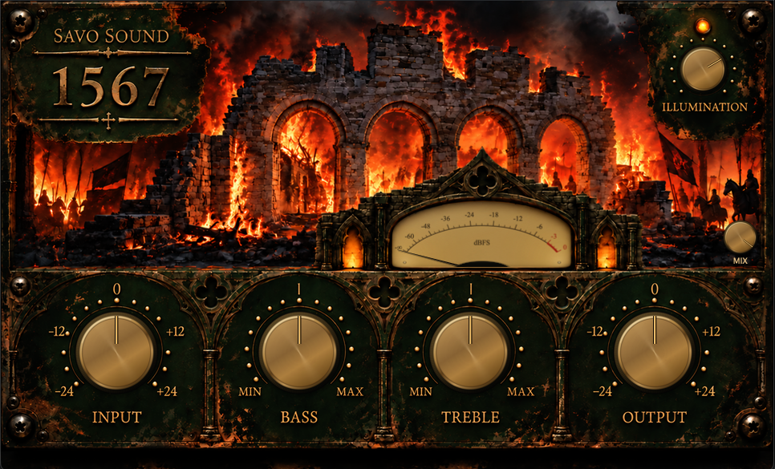

1567 is a stereo saturation and tone-shaping plugin inspired by the Altec 1567A tube mixer. Rather than attempting a component-for-component recreation, we used the original circuit as the foundation for a lighter, purpose-built saturation processor designed for modern mixing.
The original passive Bass and Treble network has been retained as an interacting circuit model rather than replaced with conventional digital shelves. Around it, the tube and transformer stages have been reworked into a lightweight nonlinear model focused on the qualities we wanted from the original design: warmth, harmonic colour, low-mid weight, transient softening and the movement of a circuit being pushed beyond its nominal operating level.
1567 is primarily intended as a stereo bus saturation tool, but it was deliberately tuned to remain useful across a full mix. At moderate settings it can add density and warmth without dramatically changing the source. Push the Input harder — preferably a little harder than seems sensible — and the circuit becomes increasingly obvious, adding compression, saturation and a more pronounced vintage character. Use Output to bring the level back where you want it.
The Mix control sits after the complete processing path and blends the processed signal with the original, latency-matched dry signal. This makes it possible to push 1567 much harder than you might normally use a bus processor, then bring the untouched signal back underneath it. At 100% Mix, the complete processed circuit is heard on its own; lower settings turn the same character into parallel saturation.
1567 is not presented as a measured or exact emulation of an original Altec 1567A. Several parameters of the original transformers are undocumented, and the nonlinear stages have intentionally been redesigned for lower CPU use and a wider useful range in a modern DAW. The passive tone circuit, however, follows the topology of the original design. The result is our interpretation of the 1567A as a modern stereo colour box rather than a museum-piece recreation.
Unzip the downloaded file and copy 1567.vst3 to:
~/Library/Audio/Plug-Ins/VST3/Restart your DAW and rescan your plugins if necessary.
DOWNLOADUnzip the downloaded file and copy 1567.vst3 to:
C:\Program Files\Common Files\VST3\Restart your DAW and rescan your plugins if necessary.
DOWNLOAD